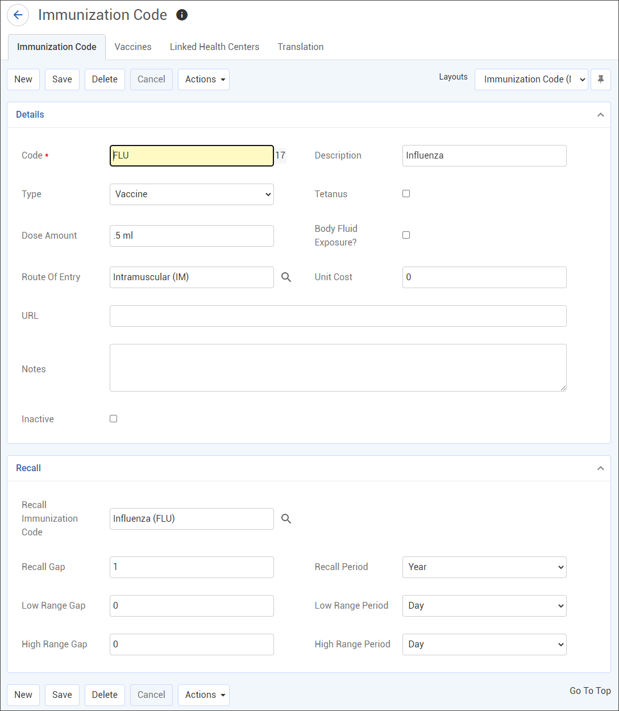

This table contains information about possible immunizations available to employees and their recommended recall period.
To filter the list of records, enter a few characters in one or more of the fields at the top followed by an asterisk, then press Enter.
Click a link to edit, or click New.

Enter a Code and Description of the immunization.
If you are setting up a series of immunizations, such as hepatitis, give each code a sequencing order (e.g. HEP-B1, HEP-B2, etc.) and then define the series in the ImmunizationSeries table.
Select the Type (booster, prophylaxis, test, titer, or vaccine). You can add more than one prophylaxis per day for an employee, but only one per day of any other type. Indicate if this immunization is for, or includes, Tetanus.
Enter the amount and units of the standard Dose Amount (e.g. .5 ml), and select the Route of Entry. This will appear in the Immunization form, but can be overwritten.
If this will be given or used as part of the Body Fluid Exposure module, select the Body Fluid Exposure? checkbox. The form changes to add four additional recall gaps and periods. Recalls, as defined here, will display on the Immunization form only when tests are added via the Body Fluid Exposure module.
Only immunizations with this checkbox selected are available when adding an immunization via the Body Fluid Exposure module.
Optionally, enter the URL for the reference information about this immunization.
Enter any notes about this immunization.
Enter the recall instructions, if required:
Select the code for the recall immunization. For example, if you are defining Hepatitis B Vaccine - 1st Dose, you would recall the employee for the Hepatitis B Vaccine - 2nd Dose.
Enter the gap and period until the next recall. For example, 5 Year, or 6 Month.
If you are setting up a series of immunizations, enter the code and description of all immunizations in the series first, then go back and define the recall period. For example, set up HEP-B1, HEP-B2, and HEP-B3, then define the recall for HEP-B1 as HEP-B2 in 1 month, etc.
Enter Low Range Gap/High Range Gap, and select Low Range Period/High Range Period. If you try to enter an immunization record that is outside the range for that immunization, the system warns it is outside the range but still creates the record if you want it.
On the Vaccines tab, select all vaccines that may be used for this immunization.
To link the immunization with a particular health center, click New on the Linked Health Center tab, and choose the health center. If the “Pre-filter picklists by default Health Center” system setting is turned on, the picklist for this table will display all values linked to this Health Center AND any values that are not linked to any Health Center.
Click Save.
If the Results tab has been added to a custom layout, you can link applicable result options to the immunization code. When entering an immunization record, the Result field will be filtered to only display the linked result options.